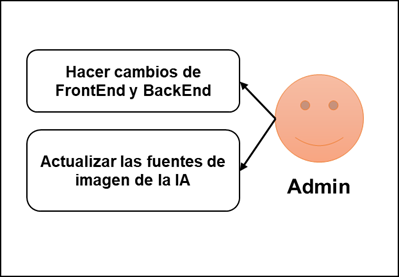

INSTITUTO TECNOLÓGICO DE CHIHUAHUA II
TECNOLÓGICO NACIONAL DE MÉXICO
Equipo 6
Temas Selectos de Software
Índice
Requerimientos funcionales y no funcionales
Estructura y arquitectura del software
Plan de construcción del software
Herramientas para pruebas de software
Objetivos
del sistema
· Crear logotipos mediante una inteligencia artificial de manera eficiente.
· Analizar los lenguajes de programación y librerías disponibles para la implementación de una inteligencia artificial.
· Conocer tecnologías emergentes en el sector de la inteligencia artificial; útiles para la creación de imágenes.
· Explorar las peticiones que dan mejores resultados para obtener un logo de calidad mediante una inteligencia artificial.
Requerimientos
funcionales y no funcionales
Funcionales:
· Que el usuario pueda registrarse
· Que el usuario pueda iniciar sesión
· Que el usuario tenga una opción para que la inteligencia artificial genere un logotipo según un texto de petición.
· Que el usuario pueda descargar y guardar en su cuenta hasta 10 logos generados por la inteligencia artificial que le hayan gustado.
· Que el administrador pueda agregar términos nuevos para el generado de logos.
No funcionales:
· Que los logotipos generados tengan una resolución de 512x512 píxeles.
· La aplicación debe ser creada usando tecnologías web, para montarse en un servidor de Node.JS, ya sea local o remoto.
·
La aplicación deberá ser responsiva al tamaño de la pantalla en la
que se ejecuta.
Modelado
del sistema
Modelado
de Casos de Uso

Diagrama
de Secuencias
Diagrama
de Clases
Diagrama
de Estados
Estructura
y arquitectura del software
El programa está realizado en JavaScript, Node js, Express js y npm.
JavaScript se utiliza para la lógica del programa, HTML y CSS es para el diseño de la página y recursos, Node js y Express js se utiliza para el backend, mientras que npm se usa también para backend, ejecutar el servidor y el uso de bibliotecas.
Se utiliza un archivo env que contiene variables del entorno de programa como el puerto de conexión y el API-Key de la IA.
Diseño
de interfaz
Plan de construcción del software
|
|
Nombre |
Duración |
Inicio |
|
1 |
Discusión y selección del tema a desarrollar |
7 días |
30/01/23 08:00 AM |
|
2 |
Planteamiento de los requisitos y la viabilidad |
7 días |
6/02/23 08:00 AM |
|
3 |
Recolección de datos relevantes y útiles para el proyecto |
7 días |
13/02/23 08:00 AM |
|
4 |
Creación de la primera versión del protocolo de investigación |
7 días |
20/02/23 08:00 AM |
|
5 |
Discusión y retroalimentación en clase sobre fallas del protocolo |
7 días |
27/02/23 08:00 AM |
|
6 |
|
7 días |
6/03/23 08:00 AM |
|
7 |
|
7 días |
13/03/23 08:00 AM |
|
8 |
|
7 días |
20/03/23 08:00 AM |
|
9 |
|
7 días |
27/03/23 08:00 AM |
|
10 |
|
7 días |
3/04/23 08:00 AM |
|
11 |
|
7 días |
10/04/23 08:00 AM |
|
12 |
|
7 días |
17/04/23 08:00 AM |
|
13 |
|
7 días |
24/04/23 08:00 AM |
|
14 |
|
7 días |
1/05/23 08:00 AM |
|
15 |
|
7 días |
8/05/23 08:00 AM |
|
16 |
|
7 días |
15/05/23 08:00 AM |
|
17 |
|
7 días |
22/05/23 08:00 AM |
|
18 |
|
5 días |
29/05/23 08:00 AM |


Conclusiones y comentarios:
Escogimos Project Libre para crear los diagramas del pan de la construcción del software debido a que es totalmente gratis, de código abierto y busca ser un sustituto a Microsoft Project, el cual es de paga. También lo escogimos por estar desarrollado en Java, lo cual lo hace ampliamente compatible con los sistemas operativos que se puedan llegar a usar. Lo comparamos principalmente con TeamGantt, debido a que este nos hubiera bastado para crear nuestro plan de trabajo, además de ser online. No nos decantamos por este debido a que TeamGantt usa un modelo de suscripciones, lo cual abría la posibilidad de que en un futuro tuviéramos que pagar para acceder a contenido y funciones necesarias.
Herramientas para pruebas de software
Lista de herramientas investigadas.
· Mocha: Mocha es un framework de pruebas de JavaScript que se ejecuta en Node.js. Nos da la posibilidad de crear tanto tests síncronos como asíncronos de una forma muy sencilla. Nos proporciona muchas utilidades para la ejecución y el reporte de los tests.
· Jasmine: Jasmine es un marco de pruebas de desarrollo impulsado por el comportamiento (BDD) para JavaScript. No se basa en navegadores, DOM o cualquier marco de JavaScript. Por lo tanto, es adecuado para sitios web, proyectos Node.js o cualquier lugar que JavaScript pueda ejecutarse.
Selección y razones.
Escogimos a Jasmine debido a que la vimos más fácil de integrar en nuestro proyecto, además está de más documentada en internet. Otra razón es que Jasmine está diseñado específicamente para ser potente en sitios web basados en NodeJS, como el nuestro.
Explicación paso a paso del diseño y ejecución de la prueba de software.
· Instalamos Jasmine al proyecto:

· Iniciamos el módulo de Jasmine:

· Creamos el archivo index.spec.js en la carpeta spec para crear nuestra primera prueba y ponemos el siguiente código:

· Añadimos Jasmine a la lista de scripts de testing de NodeJS en el proyecto:

· Corremos las pruebas con el comando npx jasmine:

Conclusiones.
Después de buscar, creemos que está fue la mejor opción para nuestro proyecto, ya que cumplió bastante su función con los resultados esperados, hay que tomar en cuenta que Jasmine casi no tiene dependencias externas, ya viene con herramientas necesarias, soporta pruebas Frontend y Backend, tiene una codificación no tan compleja y una amplia documentación para usarlo con varios frameworks.
Siendo los test muy importantes para mejorar el diseño de un código, verificar que funcione y más que nada evitar futuros Bugs.
Hacer el test fue bastante sencillo ya que lo único que está sucediendo es comprobando el Index (inicio) de la página web.
Análisis del árbol de fallos.
Lista de herramientas investigadas.
· Draw.io: Draw.io es una herramienta de diagramación, de diagrama de flujo, de proceso, entre otras muchas funciones. Es una herramienta gratuita con la que se puede dibujar cualquier tipo de mapas mentales, mapas conceptuales, esquemas o diferentes representaciones gráficas, como diagrama de jerarquía o conjuntos.
· Lucidchart: Permite que los usuarios creen borradores y compartan diagramas de flujo profesionales, proporcionando diseños para todo, desde procesos de lluvia de ideas hasta administración de proyectos.
· Edrawsoft: Es un software de diagrama integral que simplifica la creación de diagramas de flujo de aspecto profesional, organigramas, diagramas de red, presentaciones comerciales, planos de construcción, mapas mentales, ilustraciones científicas, diseños de moda, diagramas UML, flujos de trabajo, estructuras de programas, diagramas de diseño web, diagramas de ingeniería eléctrica, mapas direccionales y diagramas de bases de datos, entro otros/as.
· Creately: Es un lienzo en línea. Ofrece a las personas y equipos un espacio de trabajo digital para planificar, intercambiar ideas, diseñar y analizar sus ideas, procesos, sistemas, estrategias, etc., utilizando una variedad de formatos: diagramación, escritura, pizarra, visualización e incluso videoconferencia.
Selección y razones.
Escogimos a Draw.io debido a que la vimos más fácil de usar a largo plazo, además de ser totalmente gratis, a diferencia de las demás. Otra razón es que Jasmine está diseñado específicamente para ser potente en la creación de diagramas de desarrollo de software.
Explicación paso a paso del diseño y ejecución de la prueba de software.
· Definimos la falla que puede pasar al correr la prueba.

· Definimos las posibles causas generales.

· Especificamos qué puede originar esas causas generales de la falla.

· Resultado:

Conclusiones.
Después de buscar, creemos que está fue la mejor opción para nuestro proyecto, ya que cumplió bastante su función con los resultados esperados, hay que tomar en cuenta que Draw.io ya viene con las herramientas necesarias, soporta todo tipo de diagramas y es sencillo de usar.